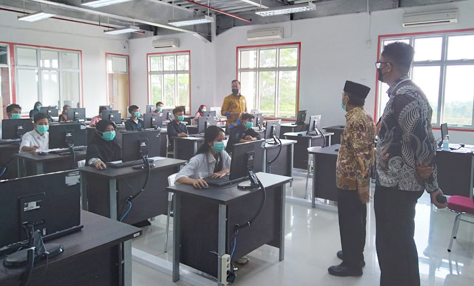

ITERA Luncurkan Program Studi Baru
Tanggal: 16 Februari 2025
Institut Teknologi Sumatera (ITERA) resmi meluncurkan program studi baru yang bertujuan untuk meningkatkan kualitas pendidikan dan riset di Indonesia. Program studi yang baru diperkenalkan mencakup berbagai disiplin ilmu seperti Teknik Robotika, Ilmu Data, dan Rekayasa Energi.
Tujuan Pengembangan Program Studi
Penambahan program studi ini bertujuan untuk memenuhi kebutuhan industri di masa depan dan meningkatkan kompetensi lulusan dalam menghadapi tantangan global.
Fasilitas dan Kurikulum
Program ini didukung dengan fasilitas modern, laboratorium canggih, serta kurikulum yang disesuaikan dengan perkembangan teknologi terbaru.
Harapan ke Depan
Pihak ITERA berharap bahwa dengan adanya program studi baru ini, mahasiswa dapat lebih siap bersaing di dunia industri dan akademik.
Kesimpulan
Peluncuran program studi baru ini merupakan langkah strategis dalam memperkuat peran ITERA sebagai institusi pendidikan unggulan di Indonesia.